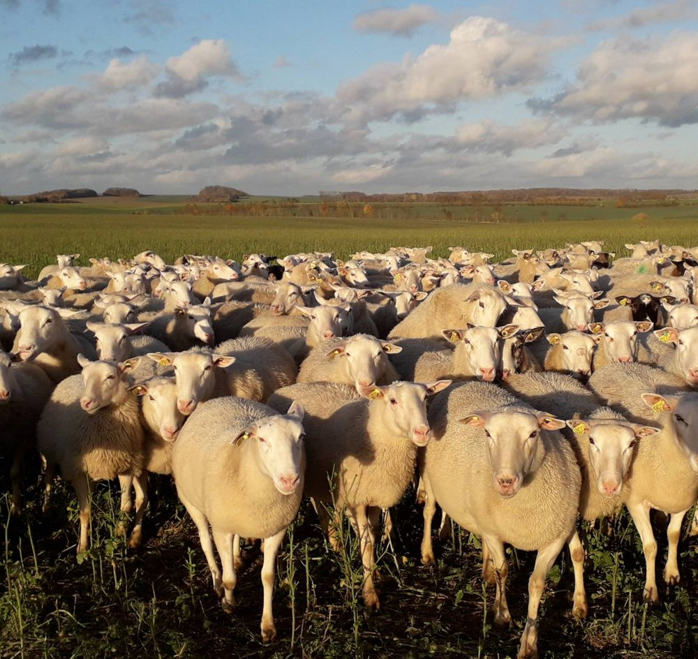

La race Romane
Une brebis productive, maternelle et rustique
Productivité
Une productivité importante
- 1 agnelage par an : 1,83 agneau en moyenne par brebis et par an, et jusqu'à 2 agneaux vendus (ou gardés) dans les meilleurs troupeaux.
- 3 agnelages en 2 ans : 2,38 en moyenne, et jusqu'à 2,5 agneaux vendables par brebis et par an dans les meilleurs troupeaux.
- Une productivité supérieure de 0,2 à 0,5 agneau par brebis avec une mise bas par an, par rapport aux grandes races allaitantes françaises. Pour un troupeau de 300 brebis, cela représente entre 55 et 138 agneaux vendus de plus.

Comparaison de la productivité des races ovines
Données CPO 2023, avec 1 agnelage par an.
| Race | Agneaux / brebis / an | Différence avec la Romane | Agneaux pour une troupe de 300 brebis / an |
|---|---|---|---|
| Romane | 1,83 | — | — |
| Lacaune (Ovitest) | 1,69 | 0,14 | − 42 |
| Île de France | 1,53 | 0,30 | − 90 |
| Grivette | 1,57 | 0,26 | − 78 |
| Noire du Velay | 1,42 | 0,41 | − 123 |
| BMC | 1,40 | 0,43 | − 129 |
Ses qualités
Des qualités maternelles remarquables
- Facilité d'agnelage : moins de 10 % des agnelages nécessitent une intervention.
- Vigueur des agneaux : ils se lèvent et tètent très rapidement.
- Des brebis très maternelles qui s'occupent rapidement de leurs agneaux : 24 h en case d'agnelage suffisent.
- Une excellente valeur laitière qui leur permet d'élever 2 agneaux, voire 3 chez les meilleures brebis dans certains élevages.
Une aptitude naturelle au désaisonnement
La Romane peut produire des agneaux toute l'année, sans aucun traitement hormonal.
Les fertilités sur des agnelages d'automne peuvent atteindre facilement 90 %, avec une prolificité qui reste autour de 2 agneaux par brebis.
Une brebis rustique dans tous les environnements
Une grande capacité d'adaptation à toutes les régions et tous les systèmes. Elle se comporte aussi bien en 100 % bergerie dans un système accéléré qu'en extérieur.
On la retrouve aujourd'hui dans toute la France : prairies bretonnes, couverts dans les zones céréalières, estives dans les Alpes ou les Pyrénées. Mais aussi en Espagne, au Portugal, en Suisse, en Belgique, aux Pays-Bas et en Iran. Elle garde une grande rusticité en plus de sa productivité.
Rentabilité
Un potentiel de rentabilité élevé
Toutes ces qualités placent régulièrement la Romane dans les races offrant les meilleures marges brutes. Les meilleurs sélectionneurs ont une marge brute par EMP allant jusqu'à 165 € (avec aides spécifiques).
de marge brute par EMP, au maximum chez les meilleurs sélectionneurs (avec aides spécifiques)